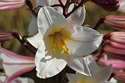

Bakung atau lili adalah bagian dari genus Lilium. Nama tanaman ini dalam bahasa Inggris adalah lily. Ada sekitar 110 suku dalam keluarga bakung (Liliaceae).
Kawasan tumbuh bakung meliputi sebagian besar Eropa, sebagian besar Asia sampai Jepang, ke selatan yaitu India, ke Indocina dan ke Filipina. Tanaman ini bisa menyesuaikan diri dengan habitat hutan, sering kali pegunungan, dan kadang-kadang habitat rerumputan. Beberapa mampu hidup di rawa. Pada umumnya tanaman ini lebih cocok tinggal di habitat dengan tanah yang mengandung kadar asam seimbang.